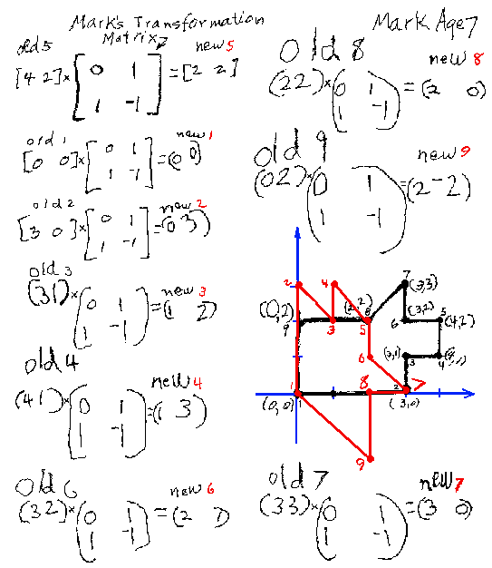
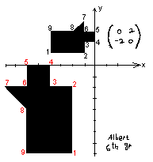

Answers to Problems from "Changing Shapes With
Matrices"
Note: All these transformations were done on 1/2" graph paper. The scans
were changed slightly to make them readable.

Can you make up two matrices that
would do
the same thing as Mark's matrix?
In Albert's work below, what does
his matrix do? How does the area of the new doggie compare to the original
doggie?

To order Don's
materials
to problems from "Changing Shapes With
Matrices"
To choose sample problems from
other chapters
Mathman home